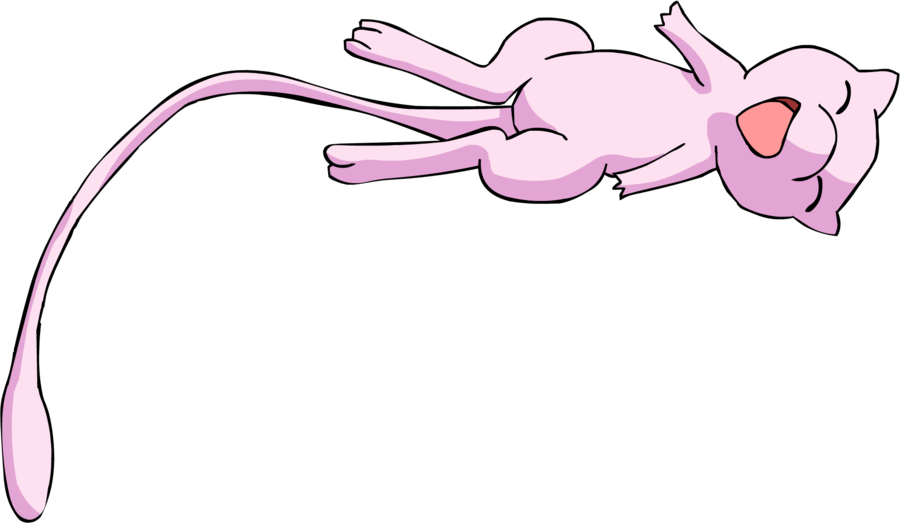

Desenvolvedora FullStack.
Hey!
Sou uma estudante universitária em Sistemas de Informação buscando construir minha carreira como uma desenvolvedora FullStack.
Tenho afinidade com Node.js, Java, consumo de APIs REST, além de desenvolver interfaces usando JavaFx e Java Swing.
Possuo interesse na área de redes de computadores.
Sistema de atendimento para uma clínica odontológica:
Esse sistema foi produzido através do Java, utilizando também
o JavaFX para a criação de uma interface mais agradável
e funcional.

Blog com sistema de postagens:
O blog foi produzido usando o Node.js e suas bibliotecas, como o express e o handlebars,
usado para a melhor organização dos arquivos estáticos (css). Além disso, foi utilizado
uma conexão com o banco de dados MYSQL, usando o Sequelize para a realização do CRUD.